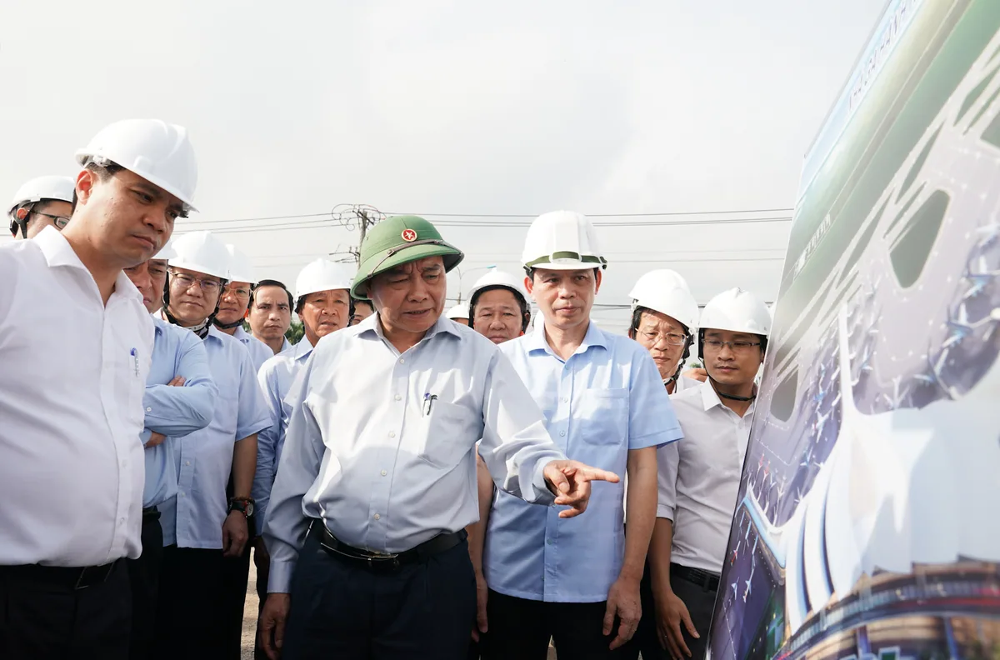
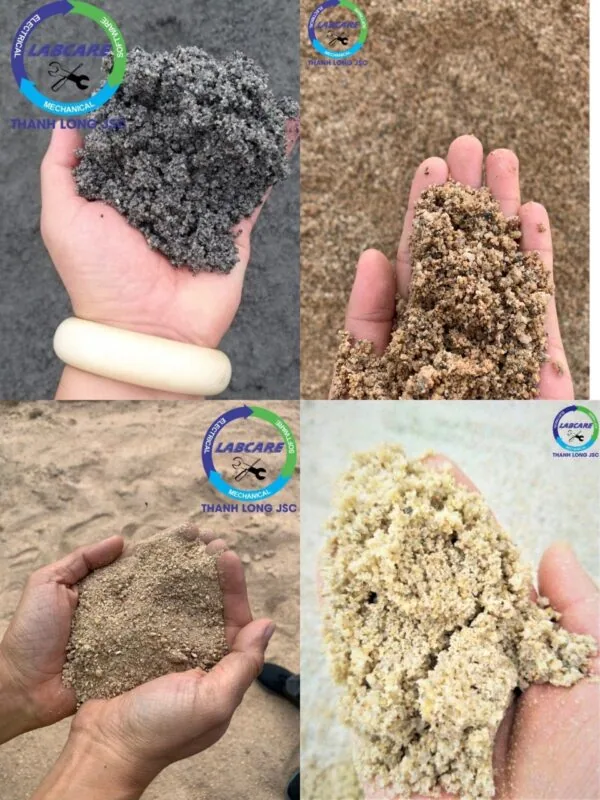

Sáng 05-01-2021, tại lễ khởi công Cảng hàng không quốc tế Long Thành. Thủ tướng Nguyễn Xuân Phúc nhấn mạnh: “đây là dự án nằm trong top được mong chờ nhất thế giới. Có ý nghĩa to lớn đối với sự phát triển kinh tế – xã hội, quốc phòng của đất nước”. “Siêu” sân bay Long Thành là dự án hạ tầng có tổng vốn đầu tư lớn nhất từ trước đến nay. Là công trình xây dựng hạ tầng đặc biệt được Quốc hội thông qua cả chủ trương đầu tư và báo cáo nghiên cứu khả thi. Nhận được sự quan tâm sâu sát của Thủ tướng Nguyễn Xuân Phúc với các chỉ đạo quyết liệt để triển khai. Vì vậy, dây chuyền máy nghiền đá đạt chuẩn phải được lựa chọn theo đúng chỉ đạo của Thủ tướng Chính phủ.

- Tiết kiệm dao nghiền cát, với 35.000-40.000 khối cát/ 1 bộ dao.
- Hệ thống điều khiển hoàn toàn tự động IC giúp tối ưu hiệu suât đầu ra, đồng thời tối thiểu điện năng tiêu thụ=> Không phụ thuộc vào trình độ và kinh nghiệm của người vận hành.
- Sử dụng động cơ 110kW-150KW=> tiết kiệm điện năng tiêu thụ hàng năm. Với sự cố nhỏ, hệ thống thủy lực tự nâng hạ và cảnh báo, sửa chữa rất chóng.
- Đội kỹ sư và chuyên gia sẵn sàng hỗ trợ khách hàng 24/24
- Lắp đặt, vận hành, bảo trì, khắc phục sự cố.
Máy rửa cát / Máy tách nước McLanahan
- Hệ thống được bảo vệ khỏi vật liệu đầu vào quá cỡ bởi lưới nghiêng hoặc lưới nghiêng thủy lực.
- Nguồn nguyên liệu vào phễu chứa được trộn tự do với nước.
- Sàng rung phân loại vật liệu thành các thành phần đá và cát.
- Cửa trộn bên trong phễu thu liệu, cho phép các sản phẩm đá kết hợp lại với nhau tùy theo yêu cầu khách hàng.
- Tính năng phối trộn thành phần hạt cát bằng cách tăng hoặc giảm thành phần cát mịn. Dễ dàng cho các ứng dụng cần thiết cho việc tạo module cỡ hạt cát.
- Cát và nước bùn được bơm từ bể chứa qua hai Hydrocyclones.
- Việc tái sử dụng nước tràn sẽ tối ưu lượng nước sạch cần cho việc rửa cát.
- Sản phẩm đầu ra từ dòng chảy bên dưới được xả vào một sàng tách nước.
- Sản phẩm chính cuối cùng được trộn giữa hai loại cát được lọc ra ngoài sàng tách nước.
- Phễu cấp liệu dạng băng tải gấp
- Tính năng cửa thăm của bể chứa giúp dễ dàng bảo dưỡng.
- Hệ thống Eze-Riser giúp nâng và khóa ống ở trên cao để dễ dàng tiếp cận với ống bơm.
Các sản phẩm cát đá từ dây chuyền máy nghiền đá đạt chuẩn SRH


Công ty nào cung cấp công nghệ dây chuyền máy nghiền đá đạt chuẩn tốt nhất hiện nay?
Trên thị trường Việt có rất nhiều đơn vị sản xuất thiết bị trong dây chuyền máy nghiền đá và cát nhân tạo nhưng đa phần ở quy mô hộ gia đình. Sản phẩm chế tạo trên cơ sở kinh nghiệm, dẫn đến sản phẩm hoàn thiện ra thị trường tính có tính ổn định không cao. Tuy nhiên để hiểu rõ hơn về nguyên lý, cấu tạo của các loại máy xay đá xây dựng các chủ đầu tư có thể tìm hiểu một số đơn vị có kinh nghiệm lâu năm trên thị trường cung cấp dây chuyền máy nghiền đá đạt chuẩn xây dựng. Có thể kể đến các nhà sản xuất đến từ Châu Âu, Mỹ, Trung Quốc,… Mỗi hãng có những ưu nhược điểm khác nhau. Tùy thuộc vào nhu cầu và khả năng tài chính của chủ đầu tư.
Là đơn vị tư vấn và cung cấp có kinh nghiệm trong ngành công nghiệp dây chuyền máy nghiền đá đạt chuẩn xây dựng. THANH LONG JSC chuyên cung cấp dây chuyền máy nghiền cát nhân tạo, dây chuyền máy máy nghiền đá xây dựng , máy rửa cát, máy tách cát mịn, máy nghiền côn, kẹp hàm, băng tải, sàng rung phân loại CVB, máy nghiền cát nhân tạo SV, vật tư trạm nghiền đến từ SRH với giá gốc chính hãng tốt nhất.
Vì sao phải chọn dây chuyền máy nghiền đá đạt chuẩn
SRH tự tin là một trong những nhà sản xuất ứng dụng triệt để công nghệ tiên tiến trong sản xuất, quản lý, sử dụng vào lĩnh vực khai thác, sản xuất cốt liệu. Được biết đến là dây chuyền máy nghiền đá xây dựng với những ưu điểm như:
- ✅ Thời gian giúp chủ đầu tư thu hồi vốn nhanh
- ✅ Dây chuyền nghiền đá xây dựng tiết kiệm điện,
- ✅ Dây chuyền nghiền đá xây dựng không tiêu hao vật tư
- ✅ Thời gian hoạt động bền bỉ, không dừng máy
- ✅ Lợi nhuận thu được nhiều nhất trên 1 khối sản phẩm đầu ra.
Từ những tiêu chí trên, chủ đầu tư có thể hiểu rõ hơn lý do vì sao các mỏ đá tại các khu vực như Đồng Nai, Bình Dương, Bình Phước, Bà Rịa – Vũng Tàu, Bình Thuận, Ninh Thuận, Cao Bằng, Lạng Sơn,… đang có xu hướng chuyển đổi công nghệ từ dây chuyền nghiền đá xây dựng cũ sang công nghệ mới từ Phần Lan.
Để được biết thêm thông tin chi tiết.
Hãy liên hệ tới hotline: 0912 712 772 để được tư vấn giải pháp đầu tư tiết kiệm, hiệu quả nhất và báo giá miễn phí.